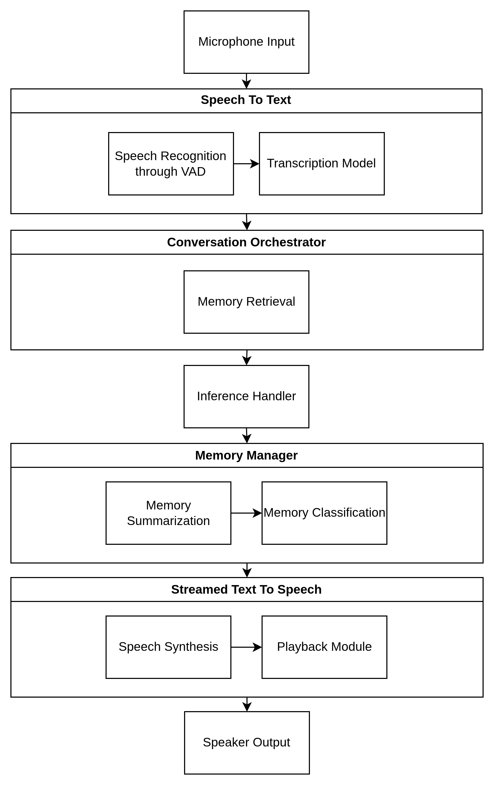
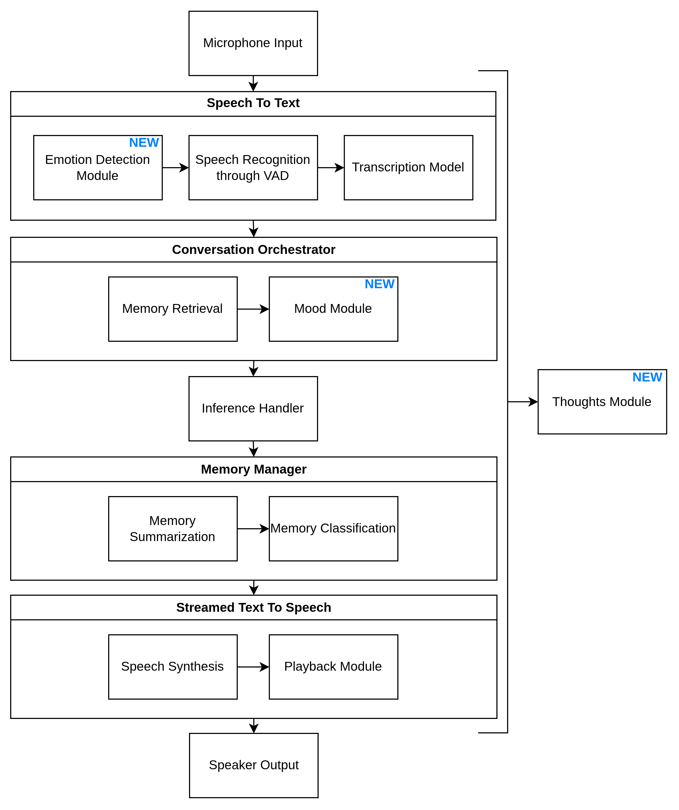

Aiired
Aiired est un projet qui vise à émuler un système cognitif alimenté par des LLMs locaux. Il combine une entrée/sortie par la voix, une mémoire vectorielle, et des agents spécialisés pour le raisonnement, la récupération de mémoire et l'exécution de tâches entièrement sur une machine locale.
État actuel
Actuellement, Aiired gère déjà les intéractions vocales et la génération de réponse via un LLM localement hébergé. Le système peut récupérer et stocker des souvenirs datés à travers plusieurs couches, ce qui lui permet de maintenir des conversations contextuelles et à long terme.

Améliorations futures
- Intégrer une détection d'émotions dans l'entrée vocale
- Implémenter du raisonnement de fond ("pensées internes") pour des résponses plus riches
- Améliorer l'extraction de souvenirs
- Introduire un système de prompts dynamiques pour permettre à l'IA de personnaliser sa personnalité elle-même
Architecture future complète
